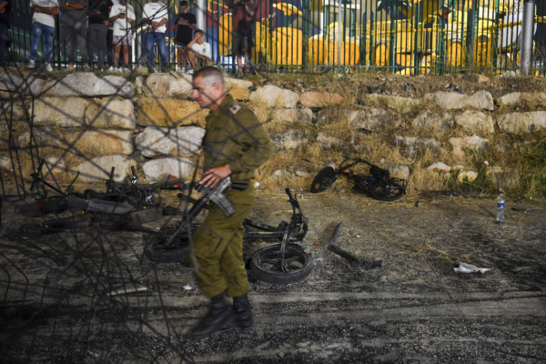

2024 年 7 月 27 日，在以色列控制的戈兰高地德鲁兹镇迈吉代勒沙姆斯，一名以色列军官走过遭火箭弹袭击被摧毁的儿童自行车。（美联社/Gil Eliyahu/加通社) 【2024年08月06日讯】（记者楚方明多伦多报导）近日中东地区紧张局势加剧，安全风险难以预测，加拿大全球事务部周六（8月3日）再次将到以色列旅行的警告提升至最高风险级别，并告诫加拿大人避免前往以色列。该旅行警告说，以色列武装冲突升级，可能会造成加拿大人不能乘坐商业航班离开该国的风险，该警告还说，人们不应该依靠加拿大政府帮助他们撤离。
政府声明说，在以色列、约旦河西岸和加沙地带的加拿大公民和永久居民，以及他们的配偶和受抚养子女，应确保他们有最新的旅行证件，以备需要撤离时使用。
据加通社报导，加拿大全球事务部此前已于4月12日将其对以色列和约旦河西岸的旅行建议提升至最高风险级别。
同月晚些时候，加拿大降低了对以色列的警告，建议加拿大人“避免所有非必要的旅行”。
最近几天，随着哈马斯领导人哈尼亚（Ismail Haniyeh）在伊朗被暗杀，以及黎巴嫩真主党最高指挥官舒库尔（Fouad Shukur）在黎巴嫩被暗杀，中东地区紧张局势加剧。
因以色列和哈马斯在加沙地带的战争持续，加拿大全球事务部继续发出警告，要求所有加拿大人避免前往约旦河西岸和加沙地带。
责任编辑：文芳